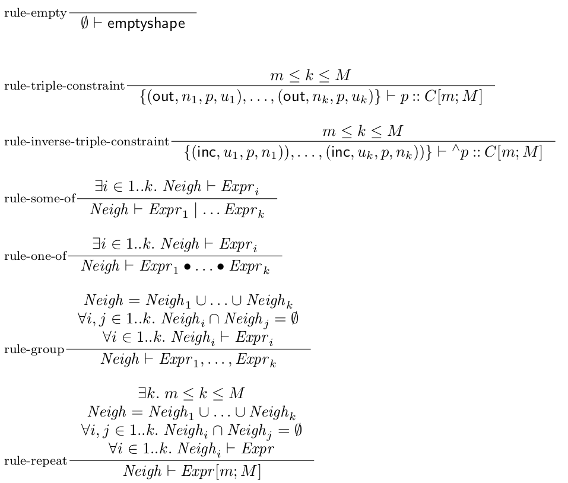

Declarative semantics of shape expression schemas
Negated triple and inverse triple constraints are introduced as syntactic facility, their semantics being defined using their non negated versions and zero cardinality.
More precisely, for every triple or inverse triple constraint X, its negated version !X is a shortcut for X[0;0].
Therefore, in what follows we do not give semantics for negated constraints.
Note also that, even though called negated, these constraints do not introduce negation in the sense of negated shapes, and do not interfere with well-definedness of schemas.
In order to handle triple constraints and inverse triple constraints, the triples of a graph will be labeled depending on whether they have the focus node as subject, or as object. Concretely a labeled triple is either an outgoing triple of the form (out, n, p, u), or an incoming triple of the form (inc, u, p, n), where (n, p, u) and (u, p, n) are triples, and out and inc are special labels. From now on, we consider that all triples are labeld, and call them simply triples (even though technically they are quadruples).
Definition [Triple matches constraint]
We say that an outgoing triple (out, n, p, u) matches a triple constraint a::C iff p = a.
We say that an incoming triple (inc, u, p, n) matches an inverse triple constraint ^a::C iff p = a.
The following definition introduces the notion of satisfiability of a shape constraint by a set of triples. Such satisfiability is going to be used for checking that the neighborhood of a node satisfies locally the constraints defined by a shape expression, without taking into account whether the shapes required by the triple constraints and inverse triple constraints are satisfied.
Definition [Set of triples satisfies a shape expression]
Let Neigh be a set of (labeled) triples, and let Expr be a shape expression (as defined by ShapeExpr).
We say that Neigh satisfies Expr iff:
- Expr is the empty shape emptyshape and Neigh is the empty set, or
- Expr is a triple constraint a::C[m;M] (where m and M are the minimal and the maximal cardinality, respectively), every triple in Neigh matches a::C, and the number of elements of Neigh is in the bounds given by [m;M];
- Expr is an inverse triple constraint ^a::C[m;M] (where m and M are the minimal and the maximal cardinality, respectively), every triple in Neigh matches ^a::C, and the number of elements of Neigh is in the bounds given by [m;M];
- Expr is a some-of shape, let Expr = Expr1 | Expr2 | … | Exprk, and Neigh satisfies Expr1, or Neigh satisfies Expr2, … or Neigh satisfies Exprk;
- Expr is a one-of shape, let Expr = Expr1 • Expr2 • … • Exprk, and Neigh satisfies Expr1, or Neigh satisfies Expr2, … or Neigh satisfies Exprk;
- Expr is a grouping, let Expr = Expr1, … , Exprk, and Neigh can be split into k disjoint sets of triples Neigh = Neigh1 ∪ … ∪ Neighk s.t. Neighi satisfies Expri for all i in 1..k.
- Expr is a repetition, let Expr = Expr[m;M], and there exists a k within the bounds given by [m;M] s.t. Neigh can be split into k disjoint sets of triples Neigh = Neigh1 ∪ … ∪ Neighk and each of these sets of triples satisfies Expr, that is, Neighi satisfies Expr for all i in 1..k.
Note that the conditions for some-of and one-of shapes are identical. The distinction between both will be made by taking into account also the non-local, shape constraints.
The above definition can be written using the following set of inference rules.
We denote Neigh |- Expr the fact that Neigh satisfies Expr.

If a set of triples Neigh satisfies a shape expression Expr, then one can construct (at least one) proof tree which root is Neigh |- Expr, using the above induction rules.
Given such proof tree, it can be shown that every outgoing triple (out, n, p, u) in Neigh appears in the conclusion of exactly one application of rule-triple-constraint.
Similarly, every incoming triple (out, u, p, n) in Neigh appears in the conclusion of exactly one application of rule-inverse-triple-constraint.
For every outgoing, resp. incoming triple (x, n, p, u) in Neigh, let wm(x, n, p, u) be the triple constraint p::C, resp. the inverse triple constraint ^p::C, that appears in the conclusion of the same rule application as (x, n, p, u) (where x is one of out or inc).
We call wm a witness mapping (for the fact that Neigh satisfies Expr).
Note that every proof tree defines a unique witness mapping.
For an RDF graph G and a node n in G, the outgoing neighbourhood of n in G is the set of labeled triples out(G,n) = (out, n, p, u) s.t. (n, p, u) is a triple that belongs to the graph G, and the incoming neighbourhood of n in G is the set of labeled triples inc(G, n) = (inc,u, p, n) s.t. (u, p, n) is a triple that belongs to the graph G.
On the implementation level, extension conditions are to be handled by a plugin mechanism, in which the validation procedure delegates checking of the extension condition to a registered plugin.
The result of evaluating the extension condition can be true: the extension condition is satisfied, or false: the extension condition is not satisfied, or error: there was an error during the execution, or undefined: the evaluation procedure didn't find the appropriate plugin.
On the semantics level, we suppose that for every extension language lang, there exists an oracle function flang that takes as parameters an RDF graph, an IRI corresponding to the focus node, and a string corresponding to the extension condition, and returns as result one of true, false, error, and undefined.
For the unsupported extension languages (the result is undefined), the default behaviour is to consider that the constraint is satisfied; this however can be parametrized.
Definition [Typing, valid typing]
Fix a schema S and a graph G.
A typing of G is a map that associates a (possibly empty) set of shape labels (shapes(S)) and negated shape labels (negshapes(S)) with every node of G, and such that for every node n in G and for every negated shape label !T ∈ negshapes(S), either T or !T belongs to t(n).
For a typing t, a node u, and a shape constraint C, we say that t(u) satisfies C, if:
- C = T1 and ... and Tk, and Ti ∈ t(u) for all i ∈ 1..k, or
- C = T1 or ... or Tk, and Ti ∈ t(u) for some i ∈ 1..k, or
- C = !(T1 and ... and Tk), and !Ti ∈ t(u) for some i ∈ 1..k, or
- C = !(T1 or ... or Tk), and !Ti ∈ t(u) for all i ∈ 1..k.
For a typing t, a node n and a triple or inverse triple constraint X, let Matching(n, t, X) be the set of triples defined by:
-
Matching(n, t, p::C) = {(out, n, p, u) ∈ G | u ∈ allowed(C)} if p::C is a value triple constraint;
-
Matching(n, t, p::C) = {(out, n, p, u) ∈ G | t(u) satisfies C} if p::C is a shape triple constraint;
-
Matching(n, t, ^p::C) = {(inc, u, p, n) ∈ G | t(u) satisfies C} if ^p::C is an inverse triple constraint.
A typing is called valid typing of G by S if for all node n in G,
- for all negated shape label !T, if !T ∈ t(n), then t1 is not a valid typing, where t1 is the typing that agrees with t everywhere, except for T ∈ t1(n), and
- for all shape label T, if T ∈ t(n), then there exist three mutually disjoint sets Matching, OpenProp, Rest such that
- out(G, n) ∪ inc(G, n) = Matching ∪ OpenProp ∪ Rest, and
- Rest = Restout ∪ Restinc, where
Restout = {(out, n, p, u) ∈ out(G, n) | p ∉ properties(expr(T, S))}, and
Restinc = {(inc, u, p, n) ∈ inc(G, n) | p ∉ invproperties(expr(T, S))}, and
- Matching is the union of the sets Matching(n, t, X) for all triple constraint or inverse triple constraint X that appears in expr(T, S), and
- if T is a closed shape, then Restout = ∅ and OpenProp = ∅
- if T is an open shape, then OpenProp ⊆ {(out, n, p, u) ∈ out(G, n) | p ∈ incl(T, S)}
- there exists a proof tree with corresponding witness mapping wm for the fact that Matching satisfies expr(T, S), and s.t.
- for all outgoing triple (out, n, p, u), it holds (out, n, p, u) ∈ Matching(n, t, wm((out, n, p, u))), and moreover if wm((out, n, p, u)) is a shape triple constraint, then there is no value triple constraint p::C in expr(T, S) s.t. (out, n, p, u) ∈ Matching(n, t, p::C), and
- for all incoming triple (inc, u, p, n) ∈ G, it holds (inc, u, p, n) ∈ Matching(n, t, wm((inc, u, p, n))), and
- for all node r that corresponds to an application of rule-one-of in the proof tree, there does not exist a valid typing t1 of G by Sri s.t. T ∈ t1(n), and
- for all extension condition (lang, cond), associated with the type T, flang(G, n, cond) returns true or undefined.
We now give a more intuitive explanation of the above definition.
The fact that t(u) satisfies a shape constraint C is used to ensure that the typing t correctly propagates the shape constraints required in the shape triple constraints.
The set Matching(n, t, X) contains all the triples in the neighbourhood of the node n that match the constraint X while propagating the shape constraints required by X.
Now, passing into review all the conditions for a valid typing. Intuitively, a valid typing will associate the shape T to a the node n only if n satisfies the constraints for T. As some constraints require to check that some nodes do not satisfy some shapes, we also keep track of the non-satisfied shapes, by associating negated types with those nodes.
- Intuitively, we want to associate the negated shape !T to a node n only if n does not satisfy the constraints for T.
This requirement is insured by the fact that replacing !T by T does not yield a valid typing.
- All the other conditions are there to ensure that the typing t properly captures the satisfiability of the non negated constraints.
- The triples in the neighborhood of the node n contribute to satisfy the shape T in different ways, and are therefore dispatched to three disjoint sets, Matching, OpenProp and Rest.
- The set Rest contains all the triples which property is not mentioned in the definition of the shape T. Note that we consider separately the outgoing and incoming properties.
- The set Matching contains all the triples that satisfy some of the triple constraints or inverse triple constraints from the definition of the shape T.
It follows that OpenProp contains the triples whose property is mentioned in T, but that do not satisfy the condition for the object node (for outgoing triples) or for the subject node (for incoming triples).
- A closed shape does not allow outgoing triples which property is not mentioned in the shape definition, nor triples which property is mentioned, but did not satisfy the recursive shape constraints or the value constraints. On the other hand, the "closedness" criterion applies only on the outgoing triples: the fact that there is no constraint on Restinc means that we always allow incoming triples whose properties are not mentioned. The asymmetric treatment of incoming and outgoing triples is a design choice: we offer the possibility to define more precise constraints for outgoing triples, as such constraints appear to be more useful, according to the use cases.
- An open shape allows all triples which properties are not mentioned (no restriction on the set Rest), and allows also outgoing triples in OpenProp as soon as their property is authorized by the included open properties. Note that the included properties are only allowed for the outgoing triples.
-
The most complex condition ensures that the constraints are satisfied recursively.
As a first condition, all the triples that matched some of the triple constraints (or inverse triple constraints), must participate in satisfying the local and recursive constraints specified in the type definition.
This requirement is translated by the fact that Matched |- expr(T, S).
Moreover,
- If an outgoing triple (out, n, p, u) participates in satisfying some triple constraint p::C, then the shape or value constraint C is satisfied by the object node u.
Additionally, we give a "priority" to the value constraints, requiring that whenever the triple (out, n, p, u) satisfies some of the value triple constraints, it cannot be used as a witness for some of the shape triple constraints;
- Similarly, the shape constraints required by the inverse triple constraints are correctly propagated through the incoming triples.
- The next condition ensures that in every one-of constraint, only one of the sub-constraints is satisfied. This is ensured by the fact that if this sub-constraint is removed, then no valid typing can be found.
- The very last condition ensures that the extension constraints are satisfied.